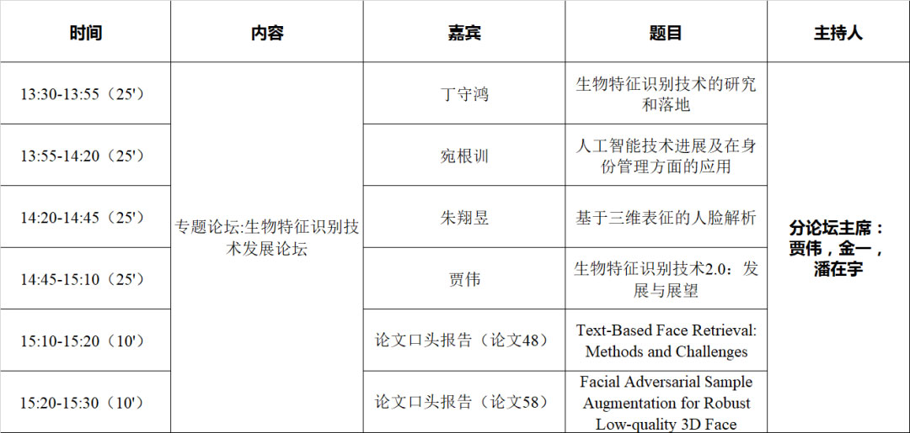
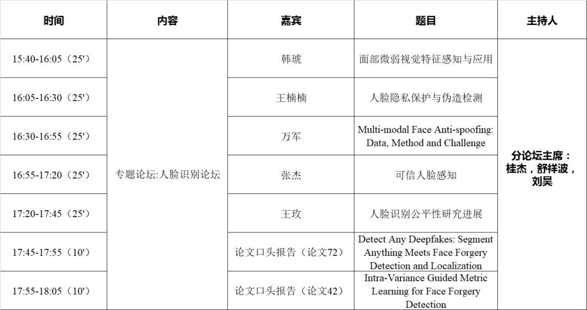
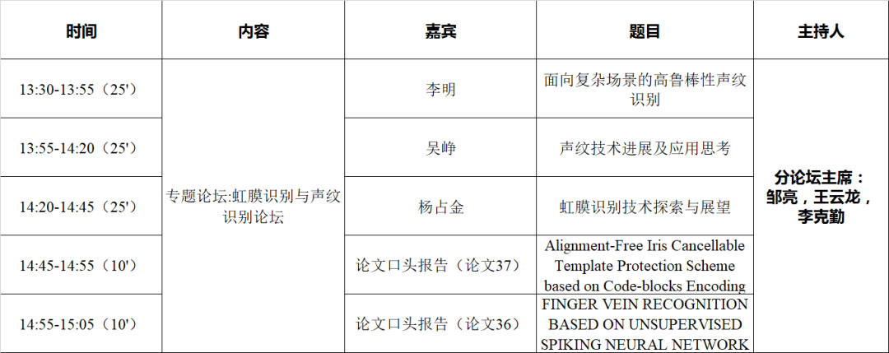
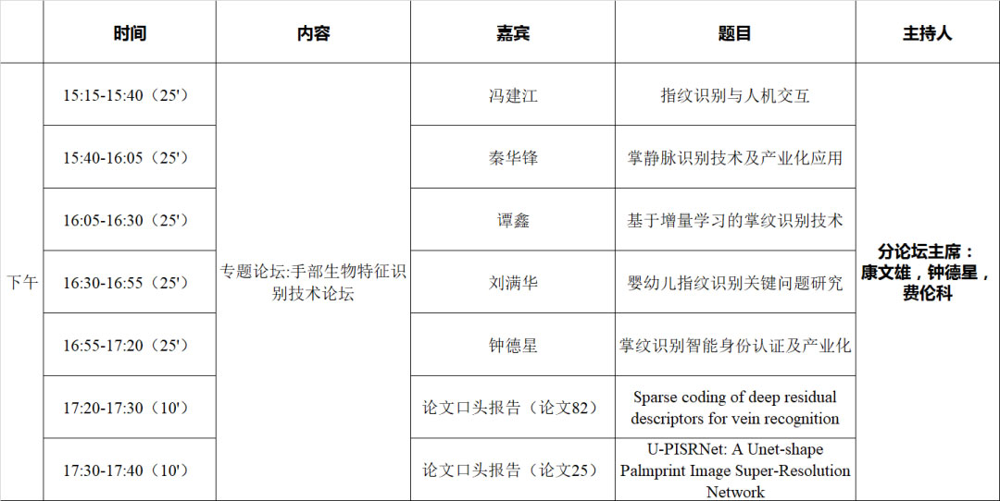
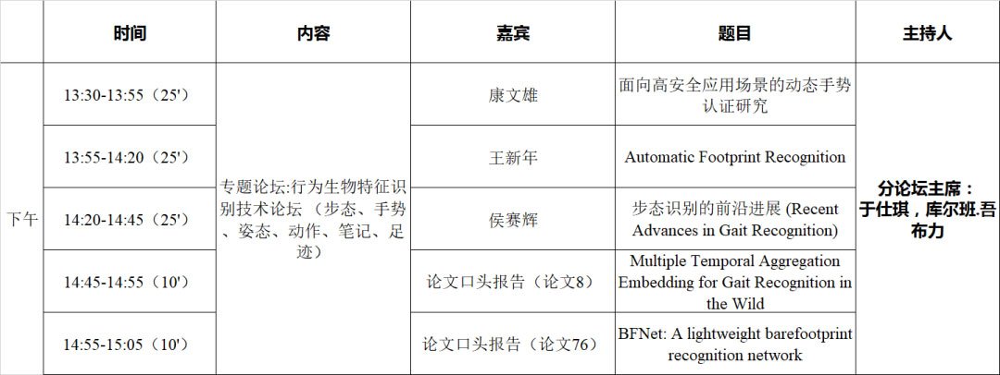
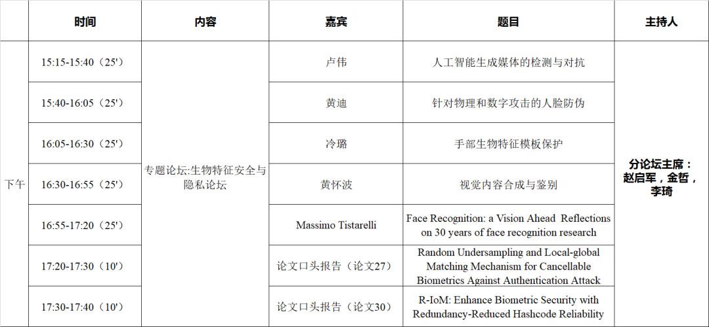
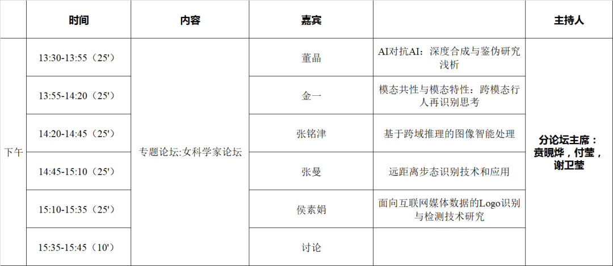
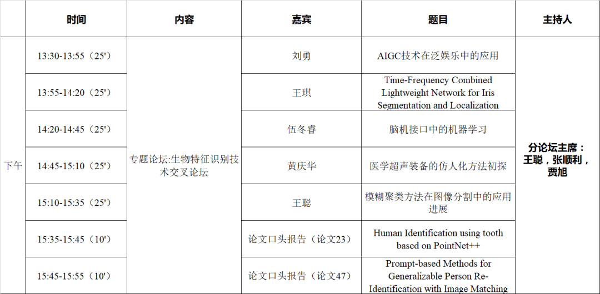
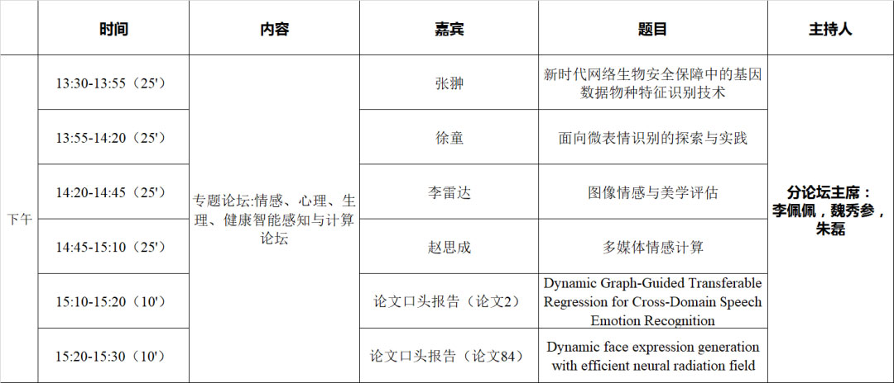

生物特征识别技术发展论坛
论坛时间：12月2日 13:30-15:30
论坛场地：主会场（下午）- 图书馆主报告厅
论坛主席：贾伟，金一，潘在宇

丁守鸿
腾讯优图实验室的研究总监
简介：丁守鸿，博士毕业于上海交通大学计算机科学与技术专业，自2016年加入腾讯，主要从事生物特征识别、活体检测、内容取证和模型对抗攻防等方面的研究。带领的团队研究成果多次被CVPR、ICCV、ECCV、NIPS等会议录用并发表，负责的技术在微信、腾讯云等多个产品中应用落地。
报告题目：生物特征识别技术的研究和落地
报告摘要：从生物特征识别背景出发，介绍面向物理介质攻击、数字合成攻击以及模型对抗攻击的安全防御手段，和该场景下的信息安全、多生物特征识别等新技术，并展示可信AI技术在典型场景中的落地实践，为应用安全发展提供了新的思路。
宛根训
公安部第一研究所研究员
简介：宛根训，公安部第一研究所研究员，证件生物特征技术方向学术带头人。主要从事法定证件生物特征识别技术研究工作，主持和参与多项国家级、省部级和产业化项目的研发、实施工作，带领团队研制的多项成果广泛应用于公安一线，在实战应用发挥重要作用。
报告题目：人工智能技术进展及在身份管理方面的应用
报告摘要：人工智能技术的进展，公安身份管理技术需求，以及应用的展望。
朱翔昱
中国科学院自动化所副研究员
简介：朱翔昱，中国科学院自动化所副研究员，国际模式识别协会（IAPR）青年学者奖获得者，IEEE Senior Member，中国科学院青年创新促进会成员，长期从事三维人脸重建、人脸识别、可解释神经网络等方面的相关理论研究与应用。共发表论文80余篇，其中作为第一作者发表T-PAMI论文 3篇，IJCV论文1篇。两次获得CVPR口头报告。发表文章的Google Scholar总引用次数为8000余次，最高单篇引用2000余次，12篇论文引用超过100次。获得ICCV 2019人脸识别竞赛冠军、FG 2017人脸微表情竞赛冠军、CCBR 2017最佳学生论文奖和CCBR 2022最佳海报论文奖。授权国家发明专利8项。入选北京科协青年人才托举工程、百度学术全球华人AI青年学者榜单（全球25人），受到腾讯犀牛鸟基金支持。获2021中国电子学会科技进步二等奖、中国图象图形学学会优秀博士论文提名奖。任2021及2022年ACM MM（CCF:A类）及国际生物特征识别大会（IJCB）领域主席（Area Chair），提出的人脸三维建模方法在被PyTorch官方Twitter报道，开源代码在Github上收获5790星，数据库被国际上180多个研究组下载使用。相关技术已在电商、安防、金融等多个行业落地应用。研发的三维人脸及人体动捕系统在阿里数字人生、淘宝直播、天猫数字藏品等APP上线。
报告题目：基于三维表征的人脸解析
报告摘要：基于二维图像构建物体的三维表征，使视觉系统获得物体的三维理解，是计算机视觉领域的基本问题之一。本次报告将探讨如何将这一理念应用于生物特征识别：通过快速准确地重建三维人脸结构，构筑人脸的三维表征用于图像校正及特征提取，从而提升人脸解析系统的鲁棒性和泛化性。报告包括三个部分：三维人脸重建、三维辅助人脸识别以及基于三维描述的人脸解析，并在最后探讨如何学习层次化三维表征提升系统可解释性。
贾伟
合肥工业大学教授
简介：贾伟，博士，合肥工业大学计算机与信息学院教授，博士生导师。中国图象图形学学会青年工作委员会副主任兼秘书长。中国自动化学会模式识别与机器智能专业委员会常务委员。20余次担任国际国内知名会议的程序主席、组织主席等。已发表SCI论文近百篇，其中在CVPR、ICCV、IEEE Transactions 会刊等国际顶级会议及权威期刊上发表论文CCF A类及中科院1区论文50多篇。主要研究兴趣为人工智能、生物特征识别、计算机视觉、模式识别等。
报告题目：生物特征识别技术2.0：发展与展望
报告摘要：身份认证已成为数字化和智能化社会的基础服务之一。生物特征识别是进行身份认证的最为有效的技术之一，也是一种广泛成功应用的人工智能技术之一。生物特征识别技术的理论研究大约始于20世纪60年代。在随后的60年里，生物特征识别的研究和应用取得了丰硕的成果。随着深度学习、云计算、大数据、5G等一些新兴信息技术的广泛应用，生物特征识别技术进入了一个新的发展阶段，我们称之为生物特征识别技术2.0阶段。在本报告中，我们定义了生物特征识别技术2.0的概念，提出了生物特征识别技术2.0的体系结构，分析了生物特征识别技术2.0的应用，最后讨论了生物特征识别技术2.0的发展前景。
口头报告
论文题目：Text-Based Face Retrieval: Methods and Challenges
论文作者：Yuchuan, Deng*; Zhao, Qijun; Hu, Zhanpeng; Zixiang, Xu
论文题目：Facial Adversarial Sample Augmentation for Robust Low-quality 3D Face Recognition
论文作者：Sun, Fengxun; Yu, Cuican; Li, Huibin*
人脸识别论坛
论坛时间：12月2日 15:40-18:05
论坛场地：主会场（下午）- 图书馆主报告厅
论坛主席：桂杰，舒祥波，刘昊
目前基于全监督深度学习的人脸视觉分析方法研究在获得突破性进展的同时也遇到瓶颈,其发展正面临来自真实场景不确定环境的挑战。本论坛将从人类认识真实世界过程中表现出的智能和认知获得启发，将不确定性估计作为额外的信息有助于模型做出更好的决策，围绕人脸识别与安全中存在的问题与挑战，以原始数据内含的结构化信息为知识载体，通过准确量化真实环境场景中数据的不确定性，赋予机器模型类人的“格物致知”特性，解决无约束环境下人脸视觉分析的瓶颈问题，建立最少依赖人类指导自主感知未知数据和知识推理的人脸识别模型与安全研究范式。

韩琥
中国科学院计算技术研究所研究员
简介：韩琥，中国科学院计算技术研究所研究员、博士生导师。2011年博士毕业于中科院计算所，之后分别在美国密歇根州立大学和谷歌从事生物特征识别研究工作，2015年回到中科院计算所工作。主要研究方向为计算机视觉、生物特征识别及医学视觉计算。在领域主流国际期刊与会议上发表学术论文100余篇，谷歌学术引用6800余次，H指数：42。研究工作先后获得5项学术论文奖，包括1项IEEE信号处理学会的最佳论文奖(2020)和4项会议论文奖。担任IEEE Trans. BIOM，Pattern Recognition等权威国际期刊的编委，以及CVPR2024, MICCAI2023, FG2023，ECCV2022, ISBI2022, IJCAI2021，ICPR2020等权威国际会议的领域主席、Senior PC、Session主席。
报告题目：面部微弱视觉特征感知与应用
报告摘要：人脸图像与视频中蕴含着丰富的视觉特征，既包括身份、属性等宏观视觉特征，也包括生理信号等隐含视觉特征。面部微弱视觉特征往往隐藏于宏观视觉特征之下，难以被人眼直接观察，信噪比低，易被其它因素干扰，其特征抽取、表示和识别面临诸多挑战。报告首先介绍常见的面部微弱视觉特征感知任务及其挑战，进而介绍我们在物理模型与数据驱动相结合、视觉特征解耦和自/弱监督学习等方面开展的面部微弱视觉特征感知探索，最后探讨面部微弱视觉特征感知的一些潜在应用。
王楠楠
西安电子科技大学教授
简介：王楠楠，教授，博士生导师，西安电子科技大学空天地一体化综合业务网全国重点实验室副主任。近年来从事图像跨域重建与可信鉴别方面的研究，具体包括图像跨域重建（如图像翻译、深度合成、图像复原等），目标身份识别（人脸识别、行为识别、行人重实别等），以及模型可信学习（带噪样本对抗攻击与防御，带噪标签鲁棒学习）等。在IEEE TPAMI、IJCV等国际学术期刊和CVPR、ICCV、ECCV、ICML、NeurIPS等国际学术会议上发表论文200余篇，授权国家发明专利30余项，其中7项实现专利技术转让，软件著作权3项，相关成果获教育部自然科学一等奖、陕西省科学技术一等奖、中国图象图形学学会自然科学奖二等奖、中国人工智能学会优秀博士学位论文、陕西省优秀博士学位论文奖等荣誉。主持国家自然科学基金优秀青年基金、联合基金重点、面上、青年项目，科技创新2030-“新一代人工智能”重大项目子课题，装备预研-教育部联合基金青年人才项目等。担任国际期刊《Visual Computer》的副主编（Associate-Editor-in-Chief）及Neural Networks编委等。
报告题目：人脸隐私保护与伪造检测
报告摘要：随着网络设施和智能技术的高速发展，人们进入了智能化的大数据信息时代。众多智能应用在带来更丰富、更便捷的服务的同时，也暴露出身份泄露、信息伪造等严重问题。本报告将从关键的人脸信息出发，讨论隐私保护与伪造检测的前沿方法与技术。首先，本报告将从对抗学习角度介绍一种新的人脸隐私保护策略，推出一种基于混淆性对抗扰动的视觉信息隐藏方法，以在保护人脸图像中个人隐私的同时，能够维持其在智能设备中的正常使用。其次，针对人脸伪造问题，本报告将从多模态和分布式两个角度，分别介绍面向多模态深伪场景的人脸伪造检测方法和基于联邦分布式架构的人脸伪造检测方法，以帮助人们明辨人脸数据的真伪。最后，本报告将对未来人脸智能合成、鉴伪和鲁棒识别问题进行讨论。
万军
中国科学院自动化研究所研究员
简介：万军，多模态人工智能系统全国重点实验室副研究员，北京市杰出青年科学基金获得者，重点研发“战略性科技创新合作”重点专项项目负责人，中国科学院对外合作重点项目负责人，IEEE Senior Member。从事智能视频分析与交互研究，发表学术论著90余篇（一作/通讯PAMI4篇，最佳论文奖2篇）。受IEEE TPAMI前主编、多伦多大学Sven Dickinson 教授邀请以第一作者撰写首部多模态人脸防伪专著。担任IEEE TPAMI、IJCV和IEEE TBIOM客座编辑、IET Biometrics 副主编和AAAI/ICME /FG/ICPR领域主席或高级程序委员。以Chair身份在CVPR （2019、2020、2023），ICCV 2021上举办人脸防伪赛事，吸引超1400支国内外队伍参赛，获国内外广泛关注。曾获得2022年度中国图象图形学学会自然科学奖二等奖（第一完成人）、第十三届北京青年优秀科技论文一等奖和国内外重要赛事冠军5项。
报告题目：Multi-modal Face Anti-spoofing: Data, Method and Challenge
报告摘要：由于大算力、大数据、深度学习的共同推动、人脸识别系统已广泛应用于智慧城市、海关、银行等公共安全领域，而人脸假体攻击可能会导致识别系统失效，进而产生严重的社会公共安全问题。因此，人脸防伪是人脸识别系统中最关键环节之一，也是当前人脸分析主要研究方向之一。本报告从多模态人脸防伪核心问题出发，介绍本研究团队在三个方面的研究工作：1）方法：将介绍多模态人脸防伪的相关研究内容，主要包括在多模态融合、跨模态转换、灵活模态测试上的探索性工作；2）数据：将介绍人脸防伪数据库构建上的工作，回顾了近5年发布的四个数据库，即CASIA-SURF、CeFA、HiFiMask、SuHiFiMask等；3）赛事：在国际顶级会议上四次举办相关赛事和研讨会，回顾了在CVPR 2019, CVPR2020、ICCV2021和CVPR2023上相关赛事情况。
张杰
中国科学院计算技术研究所副研究员
简介：张杰，中国科学院计算技术研究所副研究员。主要从事算法攻防、人脸识别、图像分割、弱/半监督学习等基础研究和应用研究。主持或参与了科技部青年科学家、基金委面上、青基等项目，在领域知名期刊和会议 TIP，TIFS，ICCV，CVPR，ECCV等上发表论文30余篇，谷歌学术引用 2200 余次，授权专利6项，获国际竞赛1次冠军，4次亚军。相关研究成果在华为主流手机、社保异地认证、安防监控等产品中得到实际应用，团队连续两年荣获华为优秀合作奖。主导SeetaFace开源项目获得4500 Stars，先后入选了北京市科技新星、MSRA“铸星计划”和中科院青促会。
报告题目：可信人脸感知
报告摘要：近些年，人脸识别技术取得了长足的进步，但在极端情况如大姿态、遮挡等条件下识别精度下降严重，人脸感知模型在准确性、泛化性和可靠性方面均未达到理想水平。本报告从如何提升人脸感知模型的准确性、泛化性和可靠性三个角度展开，重点介绍旁路网络增强的表示学习方法、基于因果干预和异常提示的领域泛化方法、对抗攻防算法及其在人脸识别上的应用。
王玫
北京邮电大学人工智能学院博士后
简介：王玫，北京邮电大学人工智能学院博士后，2022年博士毕业于北京邮电大学，研究兴趣包括模式识别和计算机视觉等方向，具体研究工作涉及人脸识别、可信人工智能和迁移学习等。以第一作者在IEEE TPAMI、IEEE TIP、CVPR、ICCV等重要期刊和会议发表论文10余篇，其中ESI高被引论文2篇，Google Scholar引用3700余次。获邀担任IEEE TPAMI、IEEE TNNLS、CVPR、ICCV等期刊和会议的审稿人。主持国家自然科学基金青年基金、中国博士后科学基金面上项目，参与了国家重点研发计划、国自然面上、企业横向等多个项目。获得2023年度北京图象图形学学会优秀博士学位论文奖、2022年北京邮电大学优秀博士学位论文奖，入选斯坦福大学“全球前2%顶尖科学家”（2022年和2023年）。
报告题目：人脸识别公平性研究进展
报告摘要：近年来，人脸识别技术经历了迅速的发展，并广泛应用在安防、金融等各个领域。然而，最近的研究和应用表明，人脸识别系统可能会表现出偏见甚至歧视行为。模型在不同群体上的性能不同可能导致某些群体难以获得服务，从而对个人和社会产生潜在的负面影响。因此，人脸识别的公平性研究受到广泛关注。本报告首先从图像识别切入，介绍公平性的难点问题和通用方法；然后，重点概述人脸识别中的种族偏见问题，在数据层面，介绍所构建的BUPT-XFace和RFW数据集以评估并提升公平性；此外，在算法层面，介绍人脸识别公平性算法的最近进展，并汇报本团队的相关研究工作。
桂杰
东南大学教授
简介：桂杰博士，东南大学青年首席教授、博士生导师，国家青年高层次人才（国家级四青人才）。2010年获中国科学技术大学模式识别与智能系统专业博士学位，2012年获得澳大利亚长江研究学者奋进奖学金，在澳大利亚悉尼科技大学量子计算和智能系统中心进行合作研究。曾先后在美国罗格斯大学和密西根大学从事研究工作。目前主要从事模式识别、机器学习、图像处理、计算机视觉及人工智能安全等方面的研究，是CCF杰出会员、IEEE高级会员、 ACM高级会员、中国人工智能学会高级会员和中国图象图形学学会高级会员。荣获2021年度江苏省计算机学会“青年科技奖”， 2022年度江苏省网络空间安全学会“青年科技奖”， 2022年度江苏省计算机学会“优秀科技工作者”。担任JCR一区期刊IEEE Transactions on Circuits and Systems for Video Technology (T-CSVT), Artificial Intelligence Review, Neural Networks和Neurocomputing的编委(Associate editor, AE)，是多个国际SCI期刊TPAMI,TNNLS, TCYB, TIP, TIFS等的审稿人。近年来，在国际学术期刊和会议上发表学术论文七十多篇，有多篇SCI高被引论文。个人主页: https://guijiejie.github.io/index.html。
舒祥波
南京理工大学教授
简介：舒祥波，南京理工大学计算机科学与工程学院教授、博士生导师、国家优秀青年基金获得者、江苏省杰出青年基金获得者、CCF/IEEE高级会员。主要研究方向为视频内容分析、多媒体分析。在TPAMI、TIP、TNNLS、CVPR、ICCV、ACM MM等国际期刊/会议上发表学术论文近100篇, 其中ESI高被引论文7篇；获中国电子学会自然科学一等奖、ACM MM 2015最佳论文提名、MMM 2016最佳学生论文奖、江苏省优秀博士论文奖、中国人工智能学会优秀博士论文奖；主持或参与国家自然科学重点/面上/青年基金、科技创新2030“新一代人工智能”重大项目课题等科研项目。担任CSIG青工委副秘书长，IEEE TCSVT编委；获2022年度IEEEE TNNL、IEEE TMI杰出审稿人。
刘昊
宁夏大学教授
简介：刘昊，博士，宁夏大学教授、博士生导师、国家级青托人才、中国计算机学会高级会员，毕业于清华大学控制科学与工程专业。现任职宁夏大学信息工程学院副院长，宁夏“东数西算”人工智能与信息安全重点实验室常务副主任。长期从事虚拟数字人、智能医学影像以及材料科学智能的研究工作，已在国际期刊IEEE TPAMI\TIP\TIFS\TMM等权威期刊以及中国计算机学会推荐会议CVPR\ACMMM等发表论文50余篇。先后主持国家自然科学基金面上项目和青年科学基金项目、中国人工智能学会-华为MindSpore学术奖励基金以及宁夏科技厅重点研发计划等10余项。曾获中国人工智能学会优秀博士论文奖和亚洲人工智能技术大会最佳学生论文奖。
口头报告
论文题目：Detect Any Deepfakes: Segment Anything Meets Face Forgery Detection and Localization
论文作者：Lai, Yingxin; Luo, Zhiming; Yu, Zitong*
论文题目：Intra-Variance Guided Metric Learning for Face Forgery Detection
论文作者：Chen, Zhentao; Hu, Junlin*
虹膜识别与声纹识别论坛
论坛时间：12月2日 13:30-15:05
论坛场地：分会场2 - 图书馆第一报告厅
论坛主席：邹亮，王云龙，李克勤

李明
昆山杜克大学电子与计算机工程长聘副教授
简介：李明，昆山杜克大学电子与计算机工程长聘副教授，大数据研究中心研究员，武汉大学计算机学院兼职教授，博导。第十五批江苏省六大高峰B类高层级人才。2013年毕业于美国南加州大学电子工程系，获工学博士学位。2013-2017年任教于中山大学卡内基梅隆大学联合工程学院及电子与信息工程学院，副教授，博士生导师，其中2013-2014年在卡内基梅隆大学电子与计算机工程系访问。2018年加入昆山杜克大学，研究方向包括智能语音处理，多模态行为信号分析等方向。在TASLP, TAC, TMM, TSP, TNSRE, JASA等学术期刊以及ICASSP，Interspeech等学术会议发表学术论文170余篇，Google Scholar引用7900+。现担任IEEE语音及语言技术委员会委员，多个国际期刊副主编，带领团队多次获得国际评测冠军，2016年被授予IBM Faculty Award，2018年被授予ISCA 5年最佳期刊论文奖，2020年被授予教育部第八届高校科学研究优秀青年成果奖。
报告题目：面向复杂场景的高鲁棒性声纹识别
报告摘要：首先描述面向复杂场景的声纹识别这一具有挑战性的任务；其次介绍实验室近期在远场、时变、自监督训练等声纹领域的一些研究成果；最后对声纹关联的其他语音任务做一些简单的展望。
吴峥
科大讯飞声纹识别条线研发总监
简介：吴峥，科大讯飞声纹识别条线研发总监，主要从事音频属性领域算法研究工作。
报告题目：声纹技术进展及应用思考
报告摘要：声纹识别技术，也称为语音生物识别技术，是一种基于人的声音特征进行身份识别的技术。随着深度学习和人工智能技术的发展，声纹识别的准确性大大提高。本次报告主要分享科大讯飞AI研究院近年来在声纹领域技术研究进展及智能家居免注册声纹、智能语音办公本说话人分离等应用情况。
杨占金
北京万里红科技有限公司副总裁
简介：北京万里红科技有限公司副总裁，虹膜产品线技术负责人。高级工程师，信息系统集成及服务高级项目经理。主要从事虹膜技术系统架构设计、研发及推广应用，组织开发大规模虹膜比对算法集群软件，扩展了虹膜技术应用规模。主导远距离、移动终端、登录认证等设备的研发设计。参与多项国家标准制定，具有多项虹膜算法、设备相关专利。
报告题目：虹膜识别技术探索与展望
报告摘要：本报告扼要介绍虹膜识别技术的原理和应用场景。在汲取大量实际应用经验的基础上,概括了虹膜识别的优势和局限性,并就实际应用中遇到的问题提出了解决方案。并从数据安全等角度来看，展望了虹膜识别技术的未来发展前景。
口头报告
论文题目：Alignment-Free Iris Cancellable Template Protection Scheme based on Code-blocks Encoding
论文作者：Jahangir, Muhammad; lai, yenlung; Chai, Tong Yuen; Kwan, Ban Hoe; Jin, Zhe; Lee, Ming Jie*
论文题目：FINGER VEIN RECOGNITION BASED ON UNSUPERVISED SPIKING NEURAL NETWORK
论文作者：Yang, Li*; XU, Xiang; Yao, Qiong
手部生物特征识别技术论坛
论坛时间：12月2日 15:15-17:40
论坛场地：分会场2 - 图书馆第一报告厅
论坛主席：康文雄，钟德星，费伦科

冯建江
清华大学副教授
简介：清华大学自动化系长聘副教授，博士生导师。研究方向包括生物特征识别、人机交互、医学影像分析。主持科技部重点研发课题、国自然优秀青年基金等项目。担任IEEE T-IFS编委、中国生物特征识别会议（2015-2021）程序委员会主席、国际生物特征识别会议（2014-2016，2021）领域主席等。发表IEEE和ACM期刊论文50余篇，合著《Handbook of Fingerprint Recognition》第三版（Springer出版）。获国家技术发明二等奖（2018）、中国电子学会一等奖（2011）、浙江省自然科学一等奖（2022）、教育部自然科学二等奖（2011和2015）、中国发明专利银奖（2019），六次获得会议最佳论文奖或提名。
报告题目：指纹识别与人机交互
报告摘要：指纹不仅仅具有重要的身份识别特征，还可用于创新的人机交互技术。指纹识别与指纹交互要解决的问题可以概括为，从传感器获取的图像推测谁的哪根手指的哪个部位以什么角度和力度触摸传感器。由于信息少而解空间大、皮肤状况差、按压方式不理想、传感器不理想、计算通信存储能力受限等挑战，解决该问题异常困难。报告将从姿态、变形、三维、匹配四个维度系统介绍课题组在指纹识别与指纹交互两个领域的研究成果。
秦华锋
重庆工商大学教授
简介：秦华锋，博士，重庆工商大学教授，硕士生导师。主要研究方向为生物特征识别技术、机器学习、计算机视觉。重庆市高校创新研究群体负责人，入选重庆市新产品创新青年科技人才、江苏省宿迁市千名领军人才。兼任中国计算机学会会员、中国计算机学会教育专委会理事、重庆市青年科技领军人才协会会员，重庆市科技伦理学会会员等。作为负责人主持科研项目10余项，其中主持国家自然科学基金项目2项，重庆市高价值专利培育项目1项，重庆市自然科学基金等其他省部级项目10项；出版专著3部，授权发明专利、软件著作权20余项，已转让5项，成果转化金额超过1400万元；在TIFS、TCSVT、TMC、TIM等国际权威期刊和会议上发表50多篇论文，累计被引超过1200次；获得重庆市科技进步三等奖、教育部博士研究生学术新人奖等。
报告题目：掌静脉识别技术及产业化应用
报告摘要：掌静脉识别技术因其具有安全性高、隐私性好、交互性强的优势受到越来越多的关注。本报告首先介绍掌静脉识别技术的研究背景和现状、掌静脉识别技术面临的挑战。然后分享团队在掌静脉数据增强、特征提取与识别、识别系统的防御等方面取得的工作进展。最后介绍团队在推进静脉识别技术产业化方面的工作以及成果示范应用效果。
谭鑫
华东师范大学副研究员
简介：谭鑫，华东师范大学计算机科学与技术学院副研究员，上海市扬帆计划入选者。他分别取得上海交通大学和香港城市大学的博士学位。他主持了国家自然科学基金青年项目、上海市青年科技英才扬帆计划资助项目、重庆市自然基金面上项目、CCF-腾讯犀牛鸟基金等。他在TPAMI、TIP、CVPR、ICCV、AAAI、IJCAI等国际知名期刊和会议发表论文30余篇，含ESI高被引1篇，作为完成人曾获上海市科技进步特等奖、中国地理信息产业协会科技进步二等奖、上海交通大学十大科技进展、世界人工智能大会TOP30榜单项目和上海市优秀毕业生等荣誉。他也担任CCF计算机辅助设计与图形学专委会执行委员、CSIG动画与数字娱乐专委会委员、CCF第26届全国计算机辅助设计与图形学学术会议（CAD/CG 2023）组织主席、国际多个顶级期刊和会议的审稿人等。
报告题目：基于增量学习的掌纹识别技术
报告摘要：获取大量高质量有身份标签的掌纹数据十分困难，且跨地域、跨人种、跨设备的掌纹数据挑战已有模型的识别能力，影响掌纹识别技术的推广应用。增量学习“存旧学新”的能力有望解决上述挑战，本报告首先介绍增量学习的研究进展，然后介绍其在掌纹识别应用中的相关性，最后展望一下增量学习在掌纹识别中的研究前景。
刘满华
上海交通大学教授
简介：上海交通大学人工智能研究院教授，博士生导师。研究方向包括人工智能、生物特征识别、多模态医学影像分析、机器视觉。主持科技部重点研发课题、国自然青年基金等项目。以第一/通信作者在国内外重要刊物和会议上发表论文60余篇，SCI收录40余篇，1篇ESI高被引论文。2019年获吴文俊人工智能科学技术奖自然科学三等奖，获上海交通大学“晨星青年学者奖励计划”最高A类奖励计划，多次获最佳论文奖。申请专利多项，软件著作权2项。担任多个国际期刊的编委，以及中韩人工智能和脑科学前沿研讨会、ICIT2020、ICIT2021 Program Chair。
报告题目：婴幼儿指纹识别关键问题研究
报告摘要：指纹是最适合婴幼儿身份识别的生物特征，但是婴幼儿指纹信号微弱、生长形变大、采集配合度差等问题，现有指纹识别算法无法直接应用于婴幼儿群体，如何提高婴幼儿指纹识别率仍然是一个挑战性的重要研究课题。针对婴幼儿指纹识别的若干关键问题，基于深度神经网络框架，本课题团队研究新的指纹图像处理和分析方法，本次报告将从婴幼儿指纹图像数据库构建、图像质量增强、指纹特征提取和匹配等几个方面介绍课题组在婴幼儿指纹识别领域的研究成果。
钟德星
西安交通大学教授
简介：钟德星，西安交通大学自动化学院教授、博导，西安交大一附院特聘教授；西安交通大学工学博士、基础医学博士后；美国伊利诺伊大学香槟分校访问学者。工信部信通院“掌纹掌静脉识别系统技术要求”标准编制专家组成员。中国计算机学会计算机视觉专委会，委员；中国图象图形学学会机器视觉专委会，委员；中国仪器仪表学会物联网工作委员会，委员。国家自然科学基金委（青年、面上）通信评议专家，安徽省、黑龙江省、深圳市科技项目函评专家。2019年以来，在IEEE TIP, TIFS, TCSVT， TIM， Pattern Recognition等国际学术期刊发表SCI论文25篇，申请国家发明专利7项。CCF-腾讯犀牛鸟拔尖人才培养卓越导师。
报告题目：掌纹识别智能身份认证及产业化
报告摘要：掌纹识别具有私密性好、准确性高和安全性强等特点，受到学术界和产业界的诸多关注。本报告首先简要介绍掌纹识别相关背景，然后重点介绍本团队近年来掌纹识别相关研究进展，包括非约束性掌纹识别、跨设备异质掌纹识别和掌纹识别中的安全保护方法等，最后简要分享本团队在掌纹识别技术产业化方面的尝试。
康文雄
华南理工大学教授
简介：康文雄，博士，华南理工大学教授，博导，广东省智能金融企业重点实验室副主任；华工-奔流电力人工智能联合实验室主任，CCF/CSIG杰出会员，CAAI高级会员。长期从事生物特征识别和计算机视觉领域的研究，近年来主持和参与国家重点研发计划课题，国家自然科学基金重点和面上项目6项、广东省自然科学基金，广东省科技计划项目，广东省教育部产学研结合项目等省部级项目10余项，在国内外重要专业期刊以及会议上发表及录用论文近百篇（JCR 一区期刊论文30余篇），其中10篇论文获得最佳论文奖、杰出论文奖和优秀论文奖。申请国际发明专利6项，授权4项，申请国家发明专利70多项，授权40余项，其中16项专利成功转让给企业，部分研究成果已经应用到机场，电网和商超和工厂等，取得了良好的社会效益。
钟德星
西安交通大学教授
简介：钟德星，西安交通大学自动化学院教授、博导，西安交大一附院特聘教授；西安交通大学工学博士、基础医学博士后；美国伊利诺伊大学香槟分校访问学者。工信部信通院“掌纹掌静脉识别系统技术要求”标准编制专家组成员。中国计算机学会计算机视觉专委会，委员；中国图象图形学学会机器视觉专委会，委员；中国仪器仪表学会物联网工作委员会，委员。国家自然科学基金委（青年、面上）通信评议专家，安徽省、黑龙江省、深圳市科技项目函评专家。2019年以来，在IEEE TIP, TIFS, TCSVT， TIM， Pattern Recognition等国际学术期刊发表SCI论文25篇，申请国家发明专利7项。CCF-腾讯犀牛鸟拔尖人才培养卓越导师。
费伦科
广东工业大学副教授
简介：费伦科，博士，广东工业大学计算机学院副教授、硕士生导师，CCF/CSIG高级会员，IEEE Senior member，主要研究方向主要包括模式识别和生物特征识别等。在IEEE TIP、TNNLS、TIFS、TMM、TCSVT、CVPR、AAAI、IJCAI、ACM MM等IEEE Transactions汇刊/CCF A类会议发表论文40余篇，发表论文Google学术引用5000余次。获中国生物特征识别大会最佳论文奖(CCBR2017)和最佳学生论文奖(CCBR2022)。担任期刊《International Journal of Biometrics》编委和《自动化学报（英文版）》青年编委，获广东省科技进步二等奖1项。
口头报告
论文题目：Sparse coding of deep residual descriptors for vein recognition
论文作者：Shen, Zhengwen; Qin, Xinfang; Pan, Zaiyu; Wang, Jun*
论文题目：U-PISRNet: A Unet-shape Palmprint Image Super-Resolution Network
论文作者：wang, yao; Fei, Lunke*; Chai, Tingting; Zhao, Shuping; Kang, Peipei; Jia, Wei
行为生物特征识别技术论坛（步态、手势、姿态、动作、笔记、足迹）
论坛时间：12月2日 13:30-15:05
论坛场地：分会场3 - 图书馆208报告厅
论坛主席：于仕琪，库尔班.吾布力

康文雄
华南理工大学教授
简介：康文雄，博士，华南理工大学教授，博导，广东省智能金融企业重点实验室副主任；华工-奔流电力人工智能联合实验室主任，CCF/CSIG杰出会员，CAAI高级会员。长期从事生物特征识别和计算机视觉领域的研究，近年来主持和参与国家重点研发计划课题，国家自然科学基金重点和面上项目6项、广东省自然科学基金，广东省科技计划项目，广东省教育部产学研结合项目等省部级项目10余项，在国内外重要专业期刊以及会议上发表及录用论文近百篇，其中10篇论文获得最佳论文奖、杰出论文奖和优秀论文奖。申请国际发明专利6项，授权4项，申请国家发明专利70多项，授权40余项，其中16项专利成功转让给企业，部分研究成果已经应用到机场，电网和商超和工厂等，取得了良好的社会效益。
报告题目：面向高安全应用场景的动态手势认证研究
报告摘要：动态手势是一种新兴的生物特征模态，由于其同时包含个体的生理特征和行为特征，因此动态手势认证方法在理论上具有更高的准确性和安全性，同时动态手势不涉及用户隐私，因而具有巨大的发展潜力和广阔的应用场景。本报告首先将对动态手势认证的机理和发展过程进行简介，并在此基础上高度概括了既有的非视觉手势认证方法，随后详细探讨了当前手势认证的一大研究热点—视觉手势认证，具体包括基于手势估计的手势认证方法和基于视频理解的手势认证方法，以及实际的样机系统研发。最后对基于手势识别的手势认证、多因素手势认证和持续手势认证方法进行展望，为动态手势认证的进一步研究和应用提供有益的参考和启示。
王新年
大连海事大学教授
简介：Xinnian Wang is currently a professor/PHD Advisor at Dalian Maritime University. He now is the director of both the program of Electronic Information Science and Technology and the joint EE program between DMU and UH. He also serves as the Chair of Dalian Chapter of China Computer Federation (CCF), and is a council member and a distinguished member of CCF. His research interests cover digital image processing, pattern recognition, and biometrics. He especially focuses on footprint biometrics, finger vein recognition and machine vision systems. He has published more than 30 papers in refereed journals and proceedings in the areas of computer vision and pattern recognition. He holds forty invention patents and has over 30 under reviewing patents, and many of his inventions have been shipped to products and services. He has been supported by the National High Technology Research and Development Program and ministerial level programs, and he has also led over 20 successfully-delivered industrial projects. He has gained one First Class Prize of Science and Technology Progress Award of Dalian City and one Second Class Prize of Science and Technology Progress Award of Liaoning Province.
报告题目：Automatic Footprint Recognition
报告摘要：Footprints carry many important human characteristics, such as anatomical structures of the foot, skin texture on the foot sole, and the habitual characteristics of standing or walking, which are stable and unique for a person. They play vital roles in forensic investigations. Automatic footprint recognition as an emerging biometric technology is still in its infancy. In this report, I will introduce key technologies and challenges involved in footprint biometrics, and will also introduce some of our progress in footprint identification and shoeprint retrieval, which provide useful implications for improving the performance of other biometrics as well.
侯赛辉
北京师范大学讲师
简介：侯赛辉，北京师范大学人工智能学院讲师，硕士生导师。本科与博士均毕业于中国科学技术大学，在中国科学院自动化研究所从事博士后研究。目前主要从事步态识别、增量学习等相关研究，在TPAMI、TIFS、TNNLS和CVPR、ICCV、ECCV等期刊和会议发表多篇论文，其中CCF-A类会议（含ECCV）和IEEE Trans期刊23篇，Google引用次数超过1900次。申请专利20余项，先后主持中央高校基本科研业务费专项资助项目和国家自然科学基金青年基金，参与国家自然科学基金重点项目、面上项目以及多个企业横向合作项目，相关研究成果已在工业界得到广泛应用。
报告题目：步态识别的前沿进展 (Recent Advances in Gait Recognition)
报告摘要：近年来，通过研究人体独特的行走模式进行身份判断的步态识别任务得到了国内外学术界和工业界的广泛关注。相对于其他生物识别技术，步态识别具有远距离、非合作、难伪装等优势，在应对跨视角、跨携带物、跨着装等多个困难场景检索中性能显著。本报告将主要讨论不同模态为步态识别带来的机遇和挑战，涵盖了：1）具有简单轮廓和低计算复杂性的二值剪影（Silhouette），在忽略服装纹理影响下如何有效捕捉可识别表征；2）关注服装无关的人体骨架（Skeleton）如何捕捉步态序列中潜在的运动细节；3）重点讨论人体语义解析（Human Parsing）中显式的人体结构信息如何引导获得全面的细粒度表征；4）其它新兴的RGB、点云、事件相机等多种模态如何为步态识别注入新鲜活力。此外，报告还将分享现阶段在开放场景步态识别中的近期研究成果，同时探讨一些未来潜在的研究问题和现实应用。
口头报告
论文题目：Multiple Temporal Aggregation Embedding for Gait Recognition in the Wild
论文作者：Zhu, Shilei*; Zhang, Shaoxiong; Li, Annan; Wang, Yunhong
论文题目：BFNet: A lightweight barefootprint recognition network
论文作者：Yang, Yi; Tang, Yunqi*; Cui, Junjian; Zhao, Xiaorui
生物特征安全与隐私论坛
论坛时间：12月2日 15:15-17:40
论坛场地：分会场3 - 图书馆208报告厅
论坛主席：赵启军，金哲，李琦

卢伟
中山大学教授
简介：卢伟，中山大学计算机学院教授、博士生导师，中山大学人工智能研究院副院长，中国图象图形学学会多媒体取证与安全专委会和交通视频专委会委员、中国人工智能学会人工智能与安全专委会委员。2007年毕业于上海交通大学计算机系获工学博士学位。主要研究方向为人工智能生成与对抗、数字取证、信息隐藏。承担国家自然科学基金重点项目、国家重点研发计划、广东省重点领域研发计划、广州市科学研究计划重点项目等，成果主要包括数字媒体构造与取证技术、数字媒体隐私保护与对抗技术、跨媒体隐蔽通信技术等，相关成果发表在IEEE TIFS、TDSC、TPAMI、TNNLS、TCYB、TPDS、TCSVT等国际主流期刊上。
报告题目：人工智能生成媒体的检测与对抗
报告摘要：以大模型为代表的人工智能技术在近年来取得了巨大的进步，尤其是在图像、视频、音频、文本等信息内容的生成领域。大模型如ChatGPT和Diffusion等在自然语言处理和图像生成领域展现出了强大的表现力，使得人工智能技术在各个领域都得到了广泛应用。然而，人工智能强大的生成能力也带来了一系列安全问题。其生成的信息内容可以被用于制造假新闻、虚假信息、深度伪造等，对个人隐私、社会稳定和国家安全都构成了严重威胁。为应对这些威胁所带来的不良影响，当前人工智能对抗技术得到了学术界和工业界的广泛关注和研究。本次的报告以人工智能的生成与对抗技术为主题，在大模型发展的背景下阐述人工智能生成内容的发展脉络，并对其所带来的一系列安全问题和对抗措施展开讨论。
黄迪
北京航空航天大学教授
简介：黄迪，博士，北京航空航天大学计算机学院教授，博士生导师。长期从事计算机视觉与模式识别方向的基础理论与关键技术的研究工作，主持国家自然科学基金优秀青年基金等项目，在领域内重要期刊和会议发表论文80余篇，引用9000余次，获IEEE ICB等学术会议论文奖项5次、国际音视频情感计算竞赛第1名、国际机器人抓取与操作竞赛第1名。成果成功应用于公安、网安、工业、医疗等国家重要行业，取得了显著的社会效益。现任中国人工智能学会理事和智能交互专委会秘书长，曾获中国图象图形学学会自然科学二等奖、中国人工智能学会杰出贡献奖等荣誉。
报告题目：针对物理和数字攻击的人脸防伪
报告摘要：近年来，人脸感知应用快速涌现，在出入控制、金融支付、媒体编辑等关键领域发挥了重要作用，显著地提升了相关行业的智能化水平和人们生活的便捷性。然而，随着三维打印及视觉生成技术的快速革新，人脸图像伪造日益逼真，对识别系统和网络信息的安全构成重大威胁。本次报告聚焦人脸图像防伪技术，介绍团队在检测物理空间和数字空间人脸攻击方面的最新研究进展，重点讨论面向未知攻击类型的检测范式、空域频域特征学习方法、纹理几何信息融合策略等主要内容，以及一些对于未来研究方向的思考。
冷璐
南昌航空大学教授
简介：南昌航空大学计算机视觉研究所所长，软件学院教授、博士，韩国延世大学博士后研究员和访问学者，美国西弗吉尼亚大学访问学者。“科创中国”江西省企业“创新达人”杰出代表和宣讲代表、获“江西青年五四奖章”、江西省“百千万人才工程”人选、江西省“远航工程”人选。中国计算机学会高级会员和南昌分部执行委员会委员，中国图象图形学学会高级会员和视觉大数据专业委员会委员、青年工作委员会委员，江西省计算机学会网络空间安全专业委员会副秘书长，江西省城市安全信息化学会理事，江西省工程师联合会理事。主持完成5项国家级课题，发表SCI论文近70篇，高被引论文3篇，授权发明专利8项。主要研究方向包括计算机视觉、生物特征识别和模板保护。
报告题目：手部生物特征模板保护
报告摘要：手部生物特征具有多方面优势并且是极具代表性的模态。本报告介绍掌纹、手掌静脉等手部生物特征识别的最新进展，包括多种手部模态的先进融合方法。还介绍手部生物特征系统的多种新型攻击方式，以及模板保护技术和密钥系统构造方案等防御机制。
黄怀波
中国科学院自动化研究所副研究员
简介：黄怀波，中国科学院自动化研究所多模态人工智能系统全国重点实验室副研究员，北京图象图形学学会理事，中国图象图形学学会视觉大数据专委会委员。2012年和2016年分别于西安交通大学和北京航空航天大学获得学士学位和硕士学位，2019年于中国科学院大学获得计算机应用技术专业博士学位。从事模式识别和计算机视觉基础理论研究，并应用到生物特征识别、图像和视频处理、视觉合成与鉴别等领域。在TPAMI、IJCV、NeurIPS、CVPR、ICCV等国际权威期刊和会议发表论文合计50余篇，其中包括CCF-A类论文26篇，出版Springer专著一部。入选北京市科技新星计划、北京市科协青年人才托举工程和中国科学院青年创新促进会，获得北京市优秀毕业生和中国科学院院长优秀奖，获得国际多媒体大会(ICME)研讨会最佳学生论文奖。
报告题目：视觉内容合成与鉴别
报告摘要：深度合成指利用深度学习等智能技术对多媒体数据进行修改、编辑和替换，从而创造出在内容或表观上与原始媒体数据完全不同的媒体内容。深度合成及其鉴别成为了机器学习和计算机视觉领域中备受瞩目的研究方向之一，广泛应用于人工智能领域，对于国家公共安全也具有极其重要的研究价值。本报告将结合实际的深度合成应用需求，介绍“合成”与“鉴别”之间相辅相成的关系，以及“攻击”与“防御”相互促进的对抗博弈机制。此外，还将涵盖语音驱动说话人、人脸表情驱动以及人物换脸等深度合成和鉴别方法的介绍与讨论。
Massimo Tistarelli
意大利萨萨里大学教授
简介：意大利萨萨里大学计算机科学正教授（终身职）兼计算机视觉实验室主任。自 1986年以来，他作为项目协调员和任务经理参与了多个由欧洲共同体资助的计算机视觉和生物识别项目。自1994年以来，他一直担任热那亚大学通信、计算机和系统科学系计算机视觉实验室主任，现在又担任萨萨里大学计算机视觉实验室主任，领导了多个有关计算机视觉应用和基于图像的生物识别技术的国家和欧洲项目。他是生物安全基金会（Biosecure Foundation）的创始成员之一，该基金会包括欧洲所有从事生物识别研究的主要研究中心。他的主要研究兴趣包括生物和人工视觉（特别是在识别、三维重建和动态场景分析领域）、模式识别、生物识别、视觉传感器。他与他人合作在同行评审书籍、会议和国际期刊上发表了 200 多篇科学论文。他出版的著作包括Springer出版社《远程生物统计学手册》和《法医学生物统计学手册》。他担任过杂志的副主编，包括TPAMI、IET Biometrics、Image and Vision Computing和Pattern Recognition Letters。自 2003 年以来，他一直担任国际生物统计暑期学校的创始主任。他是 IAPR 研究员、IEEE 高级会员和 IEEE 生物统计学理事会副主席。2022年，他被IEEE 生物统计学理事会授予 "功勋服务奖"。
报告题目：Face Recognition: a Vision Ahead Reflections on 30 years of face recognition research
报告摘要：Face recognition is possibly one of the most successful applications of Computer Vision and AI. Today's information technology allowed to deploy face recognition in several domains, ranging from automated border control to mobile device authentication. Even though the progress in computing power and machine learning allowed to implement very fast and efficient systems, there are still several issues which remain unsolved. On the other hand, the basic "face recognition pipeline", conceived 30 years ago, still remains unaltered. As such, we need to learn from the past and address some research questions which are still unanswered. Among them:
1. If face recognition is a "solved" problem, why are we still doing research on this topic?
2. What are the drawbacks and limitations of current deep learning models? How far can we go by exploiting increasing amounts of face data?
3. Is the human visual system still the best comparative face recognition model? If so, what can we learn from the way humans recognize faces?
4. How can we build "ethical" systems which properly address current privacy concerns?
In this talk we'll address these questions, trying to envisage a path forward with the aim of driving our research curiosity towards the design of tomorrow's intelligent machines.
赵启军
四川大学教授
简介：教授、博士生导师，主要研究生物特征识别、视听计算。已发表论文100余篇，出版计算机视觉相关专著和译著各2部。主持自然科学基金青年和面上项目、十三五重点研发计划项目子课题、省部级课题和多项企业合作项目等。曾担任第11届中国生物特征识别大会（CCBR2016）和2018年IEEE身份、安全和行为分析国际会议（ISBA2018）的程序委员会主席，第9届IEEE生物特征识别理论、应用和系统国际会议（BTAS2018）和2021年生物特征识别国际会议（IJCB2021）的人脸识别领域主席，首届中国图象图形大会（CCIG2022）企业论坛主席，2023年IEEE人脸与姿态识别国际会议（FG2023）网络主席等。曾获得上海市自然科学奖二等奖、四川省科技进步奖三等奖、国际计算机视觉与模式识别会议（CVPR）杰出评审专家称号、《中国图象图形学学报》优秀编委等。
金哲
安徽大学教授
简介：教授，博士、海外高层次引进人才，入选安徽省“百人计划”。作为玛丽居里学者在意大利萨萨里大学、奥地利萨尔斯堡大学从事生物特征保护和加密方向的研究。目前主要从事可信人工智能、计算机视觉、模式识别及多媒体安全等方面的研究。主持国家自然科学基金面上项目、安徽省自然科学基金面上项目等省部级课题和马来西亚教育部等多项海外科研项目等。已发表高水平期刊和会议学术论文70余篇，包括IEEE、ACM会刊及CCF推荐A类国际会议。
李琦
中国科学院自动化研究所副研究员
简介：李琦，中国科学院自动化研究所副研究员，中国科学院青促会会员，2021-2023北京市科协青年人才托举，北京图象图形学学会理事,中国图象图形学学会视觉与大数据专委会委员，中国人工智能学会模式识别专业委员会委员。2011年-2016在中国科学院自动化所获博士学位，一直从事模式识别与计算机视觉核心理论与关键技术研究，在CCF-A类期刊和会议（TPAMI，IJCV,TIFS,NeurIPS,CVPR等）发表二十多篇文章，主持国家重点研发计划一项，国家自然科学基金两项。所研发的“视听觉个体感知与交互关键技术与应用”获2022年度中国图象图形学学会技术发明奖二等奖。申请专利十多项，软件著作权四项，所研发人脸识别及安全系统成功应用在华为、蚂蚁金服、铁路系统等。
口头报告
论文题目：Random Undersampling and Local-global Matching Mechanism for Cancellable Biometrics Against Authentication Attack
论文作者：ying, zhou; Lee, Ming Jie; Zhang, Hui; dong, xingbo; Jin, Zhe*
论文题目：R-IoM: Enhance Biometric Security with Redundancy-Reduced Hashcode Reliability
论文作者：Goh, ZhengHui; Liang, Shiuan-Ni; Jin, Zhe; lai, yenlung*; Lee, Ming Jie; Wang, Xin
女科学家论坛
论坛时间：12月3日 13:30-15:45
论坛场地：主会场（下午）- 图书馆主报告厅
论坛主席：贲晛烨，付莹，谢卫莹

董晶
中国科学院自动化研究所研究员
简介：董晶，女，博士，中国科学院自动化研究所智能感知与计算研究中心研究员；曾入选国家高层次青年人才、北京市杰青项目。她是CSIG/CCF/IEEE 高级会员, CAAI杰出会员，中国科学院青年创新促进会会员， 中国图象图形学学会（CSIG）理事、副秘书长、女工委秘书长；IEEE亚太区执委（2017-2024）、IEEE信号处理协会全球成员发展主席（2022-2024），IEEE人道主义科技董事会成员（2023），北京市女科协理事，北京图像图形学学会常务理事、青工委主任。她目前主要从事人工智能安全与对抗、多媒体内容取证等前沿方向的技术研究。已在国际权威期刊及学术会议上发表学术论文80余篇，已授权24项中国专利含3项美国专利。她曾获4次学术会议最佳（优秀）论文奖、2016年度IBM学院奖、2019年度中国人工智能学会杰出贡献奖、2020年度CSIG石青云女科学家奖、2021年度北京青年优秀科技论文奖、2021年度CSIG科技奖二等奖（排名第一）、2021年度吴文俊人工智能科学技术奖（技术进步科普类）、2022年度中国发明协会创业创新奖一等奖（排名第一）以及国家广电总局MediaAIAC大赛深度合成技术应用类一等奖（排名第一）。
报告题目：AI对抗AI：深度合成与鉴伪研究浅析
报告摘要：多媒体内容深度合成与应用已成为当前可信人工智能领域的热门研究方向之一，随之带来了越来越多数据内容安全与隐私保护的挑战。本报告将面向人工智能伪造音视频的鉴定和治理关键技术，重点关注数字人像深度合成与鉴伪的AI对抗研究，介绍多媒体“伪造”与“鉴别”、“攻击”与“防御”相互博弈和相互促进的独特及可持续发展机制，通过研究深度合成与鉴伪的机理、机制和线索梳理，展开多媒体伪造与取证应用的相关前沿探讨，并介绍其相关研究的技术进展与发展趋势。
金一
北京交通大学教授
简介：金一，北京交通大学计算机学院教授，博导，中国计算机学会杰出会员。研究方向为视频语义理解、视频行为分析、多模态融合、行人再识别等。发表学术论文70余篇，其中包括IEEE/ACM汇刊等领域重要期刊和CCF A类会议CVPR，AAAI，ICCV，IJCAI，ACM MM等。主持国家自然科学家基金面上项目、科技部重点研发课题、教育部中移动联合基金、军科委领域基金重点项目课题等。任多个国际期刊的编委、客座编委，CCF A类会议AAAI高级程序委员会成员、ACM MM、IJCAI、ICCV等会议程序委员会委员。任中国计算机学会YOCSEF学术秘书（23-24），多媒体专委会、大数据专委会执委，女工委委员等。授权国家发明专利18项，国际发明专利2项，参编国家、行业标准3项。获IEEE Computer Society年度最佳论文奖提名奖等国际论文奖励3项，2020年度中国计算机学会科学技术奖科技进步优秀奖等奖励，入选2023年度北京市轨道交通学会杰出青年人才。
报告题目：模态共性与模态特性：跨模态行人再识别思考
报告摘要：对特定行人目标进行跨摄像头跨场景检索，在公共监控、智能安防、城市治理等领域具有重要应用价值，已成为计算机视觉的研究热点之一。以低质量行人特征表达、移动行人目标检测、跨视域、跨模态行人再识别等为代表的智能感知与推理在真实开放场景行人检索发展中起着非常重要的作用。近年来，团队结合平台积累和优势，在领域权威期刊和人工智能领域顶级会议等发表论文20余篇，本次报告将结合团队近年来在跨模态行人再识别领域的部分研究成果，探讨弱监督机器学习、跨模态特征一致性表达、模态融合与交互等在开放场景行人目标搜索的若干关键技术及其未来发展方向。
张津铭
西安电子科技大学教授
简介：西安电子科技大学通信工程学院教授，博士生导师，国家级青年人才。2015至2016年赴澳大利亚悉尼科技大学访问研究。长期围绕计算机视觉、人工智能、跨域图像处理开展研究，成果应用于高分辨对地观测、深空探测、集成电路、智能安防等领域。曾入选中国科协青年人才托举工程、获吴文俊中国人工智能优秀青年奖、中国图象图形学会优秀博士学位论文，指导学生获中国“互联网+”大学生创新创业大赛冠军等。迄今为止，作为第一作者/通讯作者在领域内国际重要期刊及会议发表学术论文30余篇，其中包含IEEE TIP、TCyb、TNNLS、CVPR、ICCV等，担任TVCJ、Applied Sciences等SCI期刊编委，担任CVPR等国际会议高级程序委员会委员。
报告题目：基于跨域推理的图像智能处理
报告摘要：图像处理是高分辨率对地观测、深空探测、智能安防、自主研发集成电路等国家重大需求中的一项核心技术。引入智能方法虽可提高图像处理的性能，但面临着“辨不清”、“看不全”、“定不准”的问题。本报告形成一套深度学习框架，建立了基于跨域推理的图像智能处理研究方案：（1）发现了流体力学理论描述的流体中粒子运动与图像超分辨率重建过程中像素点运动具有相似性规律，构建了基于动力学系统启发的图像超分辨率重建模型；（2）发现了数据样本潜在分布对跨模态图像生成的作用机理，建立了基于知识数据双驱动的跨模态图像生成模型，提高模型设计的可信度；（3）借鉴了生物视觉感知与脑认知机理，提出了基于类脑感知与计算的跨域重建图像后处理方法，提高检测结果的可信度。
张曼
北京邮电大学研究员
简介：张曼， 北京邮电大学研究员、博士生导师，主要研究方向为计算机视觉、模式识别、生物特征识别，已主持国家自然科学基金面上项目、国家重点研发计划课题、北京市科委人工智能专项等多项国家和省部级科研项目的研发工作，成果发表在人工智能本领域知名期刊和会议（IEEE TPAMI、IEEE TIP、AAAI、 ACM MM等）。曾获得北京市三八红旗奖章、北京市青年骨干、北京市科技新星、北京市科协青年人才托举、海淀青年榜样等奖项。现任IEEE女工程师协会北京分会主席、中国人工智能学会模式识别专委会副秘书长、中国图象图形学学会视觉检测专委会副秘书长、北京图象图形学学会理事、北京市女科协理事、北京市青联十二届委员。
报告题目：远距离步态识别技术和应用
报告摘要：步态是远距离复杂场景下唯一可清晰成像的生物特征，难以伪装且成像时无需主动配合。步态识别通过人的身体体型和行走规律来识别身份或分析人体特征，在公共安全、智能家居、医疗体育等领域具有广泛的应用前景。开放场景中噪声、遮挡、姿态变化等给步态识别带来了极大的挑战。本次报告将介绍本课题组在解决步态数据质量评估、人体遮挡和视角变换等常见问题的最新研究进展，以及在多个场景的应用现状。
侯素娟
山东师范大学教授
简介：山东师范大学信息科学与工程学院教授、博士生导师，主要从事多媒体数据处理、目标检测与识别等方向的研究，在TMM、Pattern Recognition、TNNLS、ACM MM、AAAI等国际高水平期刊和会议上发表论文40余篇。主持国家级科研项目3项、省部及厅局级项目3项，申请国内外专利17项（授权4项）。现为IEEE会员、CCF多媒体专委会委员、中国图学学会理事会图学大数据专委会委员、山东省人工智能学会理事。济南市高层次人才、山东省高等学校优秀青年创新团队主要成员，作为主要参与人获2022年山东省科技进步一等奖、2019 年、2018年山东师范大学教学成果奖二等奖。
报告题目：面向互联网媒体数据的Logo识别与检测技术研究
报告摘要：Logo检测与识别技术在商标保护、版权检测等方面发挥重要作用，同时对品牌商业分析、品牌溯源追踪、优化数字营销策略、上下文广告投放具有重要的理论意义和实际价值。Logo研究领域缺少大规模公开可用的Logo数据集，成为制约Logo检测技术发展的关键瓶颈，Logo自身的特点，如多尺度问题、真实的目标图片视野中占比较小且存在形变等，对精准检测造成极大挑战。本报告将汇报构建的国际上规模最大的Logo2K+、Logo3K 等数据集，解决了现有数据集种类少、噪声大导致模型泛化能力低的难题。同时设计了神经结构搜索和交叉特征传递等算法，突破了在多尺度、小目标、大长宽比等情形下Logo 目标检测的瓶颈。
贲晛烨
山东大学教授
简介：贲晛烨，山东大学教授，博导，国家级青年人才，山东省泰山学者青年专家，研究方向为信号与信息处理、图像处理、模式识别。作为项目负责人，主持国家自然科学基金优秀青年科学基金项目、国家重点研发计划项目课题、山东省重大科技创新工程项目等20余项国家级和省部级项目。在IEEE T-PAMI、IEEE T-IP、IEEE T-CSVT、IEEE T-MM、PR 、CVPR等国内外核心期刊会议上发表学术论文100余篇，申请国家发明专利94项，授权64项，转让3项，成果在宁夏银川监狱、内蒙古呼和浩特第三监狱和江西省赣州监狱的个人谈话、心理矫治与智能审讯系统以及青岛两个社区的视频监控系统上成功应用。曾获中国图象图形学学会石青云女科学家奖，青岛市巾帼建功标兵、青岛市巾帼科研之星、山东大学“三八红旗手”等称号。
付莹
北京理工大学教授
简介：付莹，北京理工大学教授，博士生导师。2009年获西安电子科技大学电子信息工程专业学士学位，2012年获清华大学自动化专业硕士学位，2015年博士毕业于东京大学信息科学与技术专业。2016年加入北京理工大学计算机学院，2017年入选国家级高层次人才计划。主要从事计算机视觉、计算摄像、图像/视频处理等相关领域研究，已在IEEE TPAMI、IJCV、TIP等国际期刊和ICCV、CVPR、ICML等国际会议发表论文40余篇，曾获得ICML2020，PRCV2019最佳论文奖。
谢卫莹
西安电子科技大学教授
简介：教授、博士生导师，国家优秀青年科学基金获得者，IEEE Senior Member。主持国家自然科学基金、科技委领域基金、ZF项目、博士后特别资助等多项项目。以第一/通讯作者身份发表IEEE Trans.系列中科院一区TOP期刊及CCF A类会议论文50篇，其中ESI高被引论文6篇，热点论文1篇，h指数为29。获陕西省自然科学优秀学术论文奖、第七届“空间信息网络”优秀论文奖、“天智杯”人工智能挑战赛全国冠军及100万项目奖励、“互联网＋”大赛全国金奖、“强芯健魂，铸基智能”计算平台挑战赛全国二等奖及369万项目奖励。以第一发明人获授权国家发明专利10件已完成转化应用。入选全球前2%顶尖科学家榜单、全国优秀创新创业导师、中国科协青年人才托举工程、中国科协优秀中外青年交流计划。
生物特征识别技术交叉论坛
论坛时间：12月3日 13:30-15:55
论坛场地：分会场2 - 图书馆第一报告厅
论坛主席：王聪，张顺利，贾旭

刘勇
浙江大学教授
简介：刘勇，浙江大学控制科学与工程学院教授，浙江大学控制学院智能驾驶与未来交通中心主任，浙江大学先进智能系统研究中心副主任，浙江省机器换人专家。获浙江省自然科学一等奖、浙江省科学技术一等奖、浙江省科学技术进步一等奖、浙江省自然科学学术二等奖、浙江省杰出青年科学基金项目，入选中组部万人计划青年拔尖人才、浙江省有突出贡献青年科技人才、2022年杭州市钱江特聘专家和浙江省 151 人才项目，以第一作者或通讯作者在TPAMI、TRO、TIP、CVPR、ICCV、ECCV、NeurIPS、ICLR、ICRA、IROS等知名期刊和机器人/计算机视觉顶级会议发表论文两百余篇。申请发明专利百余项，已授权50项，其中5项发明专利已向国内知名机器人公司授权转让，技术转化形成了有竞争力的机器人产品，并产生了可观的经济效益。主要研究方向为：自主机器人与智能系统、机器人自主规划与导航控制、视觉识别与模式识别、视觉图像生成和创作、SLAM技术及多传感器融合技术。
报告题目：AIGC技术在泛娱乐中的应用
报告摘要：随着人工智能和图像处理技术的飞速发展，AIGC技术在泛娱乐领域的应用愈发广泛。本报告将从内容创作、图像异常检测和基础模型结构设计三个角度，通过我们近期的研究发表工作探讨AIGC技术在泛娱乐中的实际应用及其潜在价值。在内容创作方面，本报告将重点讨论人脸相关的人脸驱动、人脸换脸和说话人脸生成等任务，以及low-level的图像上色、图像超分和视频生成任务。这些技术在影视制作、游戏开发和虚拟现实等泛娱乐领域具有广泛的应用前景，可大幅提高内容生产效率和质量。在图像异常检测方面，本报告将关注假脸检测和无监督图像异常检测任务。随着深度伪造技术的发展，对假脸和异常图像的检测变得至关重要。通过该技术，我们可以有效地识别和防范虚假信息的传播，确保泛娱乐领域的健康发展。在基础模型结构设计方面，本报告将探讨如何针对泛娱乐任务优化模型结构，提高模型性能和效率。通过对模型结构的改进，我们可以实现更高质量的图像处理和生成，为泛娱乐领域带来更多可能性。
王琪
东北大学副教授
简介：王琪，男，博士，东北大学理学院数学系副教授。研究方向：生物特征识别、数据分析、人工智能理论及其应用等。2012年美国明尼苏达大学统计学院访问学者，2018年北京大学数学科学学院访问学者。主持国家自然科学基金、省部级基金4项，主持或参与横向课题6项。研究的虹膜识别算法在国际噪声虹膜识别比赛（NICE:II）中，获得全世界第2名。提出的快速图像压缩算法，分别于2017、2018年，在国家自然科学基金委信息学部主办的“眼神杯”遥感图像压缩比赛中荣获第2名和第1名。2019年获得微软主办的MS COCO Panoptic Segmentation Challenge获得全球第3名。2021年获得国际虹膜分割比赛第三名。
报告题目：Time-Frequency Combined Lightweight Network for Iris Segmentation and Localization
报告摘要：Iris recognition is a high-accuracy biometric technology. However, applying iris recognition in mobile devices still faces significant challenges, such as limited computational ability and variable iris images. The reporter would present their work on lightweight iris segmentation and localization, which are built based on both time and frequency domain processing. Experimental results show that the model achieves competitive performance to existing methods with only 0.38M parameters and 5.57 GFLOPs.
伍冬睿
华中科技大学教授
简介：伍冬睿，华中科技大学人工智能与自动化学院教授、博导、院长助理，图像信息处理与智能控制教育部重点实验室副主任，IEEE Fellow，IEEE模糊系统汇刊(IF=11.9)主编。主要研究方向为脑机接口、机器学习等。发表《国家科学评论》、IEEE TPAMI、Proceedings of the IEEE等SCI论文106篇，谷歌学术总引用12000余次(H=57)。获 2023中国自动化学会自然科学一等奖（排1）、2022教育部青年科学奖、2021中国自动化学会青年科学家奖、2017 IEEE SMCS首届青年科学家奖等，2021 IEEE 神经系统与康复工程汇刊最佳论文奖、2014 IEEE 模糊系统汇刊杰出论文奖、2012 IEEE 计算智能学会杰出博士论文奖等6个杰出论文奖，2021-2022蝉联基金委信息科学部、中国电子学会和清华大学共同举办的中国脑机接口比赛技术赛全国总冠军。
报告题目：脑机接口中的机器学习
报告摘要：脑机接口是人脑与外部设备（计算机、机器人等）的直接交互通道。因为个体差异与脑电信号的非平稳性，脑机接口系统经常需要针对新用户或新任务进行个性化校准，费时费力，影响用户兴趣。先进的机器学习方法可以帮助减少甚至完全消除校准，提高系统准确度和用户友好性。另外，最近研究发现脑机接口中的机器学习模型容易受到对抗攻击影响，而且脑电信号中包含了很多个人隐私信息，因此脑机接口系统的安全性和隐私保护也是其大规模应用的重要考虑。本报告将介绍脑机接口中机器学习的最新进展和研究挑战。
黄庆华
西北工业大学教授
简介：黄庆华，西北工业大学光电与智能研究院教授、博导。主要研究方向：多维度医学超声成像、医学数据挖掘与智能分析、以及医疗机器人系统等。主持多项科技部2030人工智能重大项目课题、国家自然科学基金项目。发表论文200+篇，其中110+篇为SCI收录，获授权专利40+件及软件著作权4件，谷歌总被引5600+次、H-index 43。入选中组部万人计划科技创新领军人才（2021）、教育部“新世纪优秀人才”（2010）、陕西省“百人计划”创新全职特聘教授（2016）、陕西省“杰出青年基金”（2019）等称号；获广东省科技进步一等奖（2012），获邀兼任中山大学特聘教授（2023.01-2024.12）、深圳大学特聘教授（2016-2018）、西安建筑科技大学雁塔学者、广西民族大学特聘教授（2021-2023）、华为技术有限公司AI大数据专家顾问（2017-2019）等；现任AI领域著名期刊Pattern Recognition 、Neurocomputing 、IET Image Processing副编辑(Associate Editor），曾任美国数学学会会刊Math Biosci & Eng等多个国际SCI期刊客座主编/编委。
报告题目：医学超声装备的仿人化方法初探
报告摘要：医学超声成像的临床应用广泛，具有实时性好、无损无辐射、成本低等优势。然而现在的超声诊察严重依赖操作者经验，难以获取规范标准的高质量数据，导致判读困难。本研究尝试在超声成像与分析推理过程中研究实现仿人化技术方法，以使系统能够学习实现临床医生的操作手法和诊断思路。具体而言，我们设计开发了自主超声扫查机器人，并针对乳腺超声图像开发了类脑推理方法，最终获得自动化、智能化的高质量超声扫查成像与辅助诊断。该研究有望在临床上代替医师实施规范的超声图像采集与类脑智能化分析诊断，具有良好的应用前景。
王聪
西北工业大学副教授
简介：王聪，1992年7月生，江苏丰县人，西北工业大学副教授、硕士生导师，国家级创新人才。曾先后在阿尔伯塔大学、南洋理工大学和新加坡国立大学联合培养。入选中国博士后创新人才支持计划(2021)、教育部春晖计划(2022)、中国科协优秀中外青年交流计划(2018)和陕西省科协青年托举人才计划(全省第一,2023)。目前研究兴趣主要在G图像处理、模糊理论与应用、小波分析及应用等方向。已完成英文学术专著1部(正校稿)，出版1个Book Chapter，发表学术论文31篇，申请发明专利6项。承担科研项目23项(其中，国家级9项(主持重点专项1项、青年项目1项、科技部重大项目子课题1项)，省部级3项)、教育教学项目4项。荣获IEEE ICICN最佳青年科学家奖(2023)、陕西省优秀博士学位论文奖(2023)、中国图象图形学学会优秀博士学位论文提名奖(2022)，担任4个国际期刊的编委和18个国际会议的程序委员会主席、出版主席、分会主席等，指导研究生获IEEE国际会议最佳学生论文奖(2023)。
报告题目：模糊聚类方法在图像分割中的应用进展
报告摘要：模糊聚类方法已经广泛应用于经典图像分割任务。经过四十余年的发展，逐渐进入了理论发展成熟阶段，应用效果也趋于饱和。本报告回顾了这四十年来的发展历程，并针对所面临的瓶颈问题提出新的研究思路。
张顺利
北京交通大学教授
简介：张顺利，北京交通大学软件学院教授、博导、副院长。主要研究方向包括视频图像处理与分析、计算机视觉、深度学习等。主持国家自然科学基金项目、北京市自然科学基金项目、企业合作科研项目多项。在ACM MM、CVPR、ICCV、TIP、TMM等国际著名会议期刊发表论文50余篇，带领研究团队2次获得国际步态识别大赛第1名。
贾旭
辽宁工业大学教授
简介：贾旭，辽宁工业大学电子与信息工程学院教授，入选辽宁省百千万人才工程，智慧城市建设评审专家。主持多项国家自然科学基金与省部级科研项目，在ICCV，neurocomputing等国内外期刊会议发表学术论文60余篇，授权发明专利10余项，《人工智能》课程获批国家一流本科课程。主要研究方向：生物特征识别，小样本学习，计算机视觉等。
口头报告
论文题目：Human Identification using tooth based on PointNet++
论文作者：Liu, Xinyi*; Yuan, Li; Yu, Jiannan; Li, Yanfeng; Jiang, Chunyu
论文题目：Prompt-based Methods for Generalizable Person Re-Identification with Image Matching
论文作者：Liu, Jialu*; Yang, Meng
情感、心理、生理、健康智能感知与计算论坛
论坛时间：12月3日 13:30-15:30
论坛场地：分会场3 - 图书馆208报告厅
论坛主席：李佩佩，魏秀参，朱磊
现代科技迅速发展，智能计算和生物特征识别技术正日益渗透到我们的日常生活和医疗保健中。本论坛的目标是聚集来自国内各地的杰出专家和研究者，分享他们在情感、心理、生理和健康智能感知领域的最新研究成果和创新思维。
论坛主题涵盖了广泛的领域，包括情感识别与情感智能、为表情识别与智能辅助、生理信号处理与健康管理以及健康智能感知与计算应用。我们将深入探讨这些领域的前沿技术、最佳实践和应用案例，以及它们在改善人们的生活和健康方面的潜在影响。
此次论坛将提供丰富的内容，包括专题演讲、学术报告和互动讨论，旨在促进跨学科的交流和合作。我们期待各位嘉宾积极参与，分享您的见解和经验，共同探索情感、心理、生理和健康智能感知与计算领域的未来前景。

张翀
国家计算机网络应急技术处理协调中心高级工程师
简介：张翀，博士，现任国家计算机网络应急技术处理协调中心（CNCERT/CC）高级工程师、网络安全应急技术国家工程研究中心数据安全部副部长。长期从事生物数据跨境安全合规的相关技术研究和应用实践，作为负责人或核心人员参与国家重点研发计划、工业互联网创新发展工程等多项国家级科研项目，牵头研制的网络碎片化生物数据重要性实时甄别引擎在支撑科技部相关工作中发挥重要作用，多次获科技部来函肯定，成果获省部级一等奖1次，发表论文、授权专利10余项。
报告题目：新时代网络生物安全保障中的基因数据物种特征识别技术
报告摘要：人类遗传资源关系国家生物安全，是国家重要战略资源，其对外提供是我国科学技术行政部门的监管重点。近年随着互联网技术、测序技术的蓬勃发展，对外提供的方式大多由实体出境转为在境内完成基因测序形成数据后，通过互联网对外提供，使监管面临新挑战——网络生物安全。那么如何从规模庞大、形式复杂的网络数据中精准发现生物基因数据，以及如何进一步识别其物种特征，以定义其重要性，是该领域的核心难题。本报告将结合行业实践探索，给出一种技术路线的介绍。
徐童
中国科学技术大学教授
简介：徐童，中国科学技术大学特任教授、博士生导师，中国中文信息学会青年工作委员会副秘书长、中国中文信息学会情感计算专委会执行委员。研究领域为社交媒体分析。发表中国计算机学会推荐A类期刊/会议论文60余篇。主持包括国家优秀青年科学基金在内的国家、省部级科研项目及校企合作项目10余项。获3项国际学术会议论文奖项，指导学生获国内外10项学术竞赛/测评冠军。获2022年安徽省计算机学会优秀青年科学家奖等奖励。
报告题目：面向微表情识别的探索与实践
报告摘要：微表情反映了人试图压制与隐藏的真实情感，是理解个体真实意图和情感认知的有效非语言线索。近年来，微表情自动识别算法的发展为自动探测、处理和识别微表情信号提供了强大的技术工具。然而，受制于有标签微表情数据的缺乏，以及反应时间短、显著性特征建模困难等技术挑战，其技术工具相较于实际应用仍有一定的距离。在本次报告中，我们将介绍实验室在小样本微表情识别、微表情关键时空信息检测，以及基于样条的微表情生成等方面的研究成果，进而介绍实验室在微表情采集平台与数据集构建方面的进展。
李雷达
西安电子科技大学教授
简介：李雷达，西安电子科技大学教授、博导，国家级青年人才；曾任新加坡南洋理工大学访问学者、高级研究员。主要研究方向为视觉质量评价、计算美学、视觉情感分析等；发表中科院一区和CCF A类论文80余篇；谷歌引用5900余次, H指数40；6篇论文入选ESI热点/高被引论文；主持国家自然科学基金项目4项、省自然科学基金等各类项目20余项，与华为、腾讯、OPPO、优必选等开展产学研合作，获2022年OPPO“产学研优秀合作伙伴”奖。研究成果获陕西省自然科学奖一等奖、山西省科学技术奖二等奖等省部级奖励4项。现任Journal of Visual Communication and Image Representation副编辑（2021年最佳编辑奖），《中国图象图形学报》青年编委（2022年优秀编委），CCF/CSIG高级会员，CSIG情感计算专委会常务委员。
报告题目：图像情感与美学评估
报告摘要：情感与审美是人类与生俱来的能力，情感计算在人机交互、商业服务、生命健康等众多领域中有重要的应用，也被认为是人工智能研究的下一个春天。情感与审美是人类的高层次认知行为，相比于传统的计算机视觉任务，视觉情感与美学计算更加抽象和主观，挑战性更大，在研究的广度与深度上都远远不足。本次报告将重点针对视觉情感与审美的高度抽象性、主观性特点，介绍图像的情感分类、多模态情感分析、大众化与个性化图像美学评估等领域的最新研究进展，并对未来的研究方向进行分析和展望。
赵思成
清华大学副研究员
简介：赵思成，清华大学副研究员，国家级青年人才，哈尔滨工业大学博士，加州大学伯克利分校和哥伦比亚大学博士后。研究方向为情感计算、多媒体、迁移学习等。发表IEEE/ACM汇刊、CCF推荐A类论文60余篇，谷歌学术引用8000余次。担任中国图象图形学学会CSIG情感计算与理解专委会秘书长、ACM MM/AAAI/IJCAI/ICASSP等国际会议的领域主席或资深程序委员、ACM TOMM/IEEE MM等国际期刊的首席客座编辑，获得CSIG优秀博士论文，入围AI 2000人工智能全球最具影响力学者榜单和全球前2%顶尖科学家榜单。
报告题目：多媒体情感计算
报告摘要：情感计算在人机交互、行为决策等系列智能活动中起到重要作用。该报告将围绕多媒体情感计算展开，系统介绍课题组的相关工作。该报告首先总结多媒体情感计算的研究背景、应用场景和主要挑战，接着从共性语义理解、个性化感知预测与标签分布学习、有限标注机器学习三个方面介绍部分代表性工作，最后讨论未来可能的研究方向。
李佩佩
北京邮电大学副研究员
简介：李佩佩，女，北京邮电大学人工智能学院，副研究员，博士生导师。主要从事交互式多模态计算、生物特征识别等方面的研究工作，并进行落地实践，以第一作者身份在国际顶级期刊和会议发表学术论文 10篇（IEEE TIFS、ICCV、ECCV、ACM MM、PR、IEEE TNNLS、IEEE TMM），其中ECCV、ACM MM等均被接收为口头报告，已授权发明专利6项。入选北京市科技新星，并作为课题负责人或骨干参与多项国家级和省部级科研项目。担任CCBR2022竞赛委员会主席、CSIG视觉大数据专委会委员、CAAI-PR模式识别专委会委员，担任顶级国际期刊与会议ICML、ICML、NeurIPS、CVPR、ICCV、AAAI、ACM MM、IEEE TIP、PR等的审稿人，并于2023年获得CVPR2023 Outstanding Reviewr，且担任ICCV Workshop的Meta-Reviewer。在国际交流合作方面，申请人作为组委会成员，发起并组织ICPR 2020关键点竞赛、CCBR2022极市行为特征识别竞赛等。
魏秀参
东南大学教授
简介：魏秀参，东南大学计算机科学与工程学院教授、博士生导师。主要研究领域为计算机视觉和机器学习，在相关领域国际顶级期刊和会议发表论文六十余篇，Google Scholar Citations逾5700次，相关研究成果获得含iNaturalist在内的计算机视觉领域国际权威赛事共8项世界冠军。曾在CVPR等国际会议讲授“细粒度图像分析”为主题的短课程。曾入选全球前2%顶尖科学家榜单、吴文俊人工智能优秀青年奖、中国科协青年人才托举工程、江苏省计算机学会青年科技奖、南京经开区中青年优秀人才、《中国图象图形学报》优秀编委、《中国科学：信息科学》优秀评审人等荣誉，主编教材《解析深度学习（第二版）》入选省部级重点教材和“十四五”国家重点出版物出版规划，出版学术专著1部。任CCF高级会员、CSIG高级会员、CCF-CV/CCF-AI等专委会执行委员、中国图象图形学报青年编委、VALSE常务AC。担任ICCV、IJCAI、ACM Multimedia等国际会议Workshop程序委员会主席，ACCV 2022 Tutorial主席，CVPR、AAAI、IJCAI等会议领域主席或高级程序委员。主持国家重点研发计划青年科学家项目等。
朱磊
同济大学研究员
简介：朱磊，同济大学研究员、博士生导师。主要研究方向是跨模态分析与检索。共发表CCF A类会议长文、ACM/IEEE汇刊论文百余篇，主编学术专著2部，ESI高被引论文8篇，Google引用7000多次。获得CCF A类会议ACM SIGIR 2019和ACM MM 2019的最佳论文提名，CCF C类会议ADMA 2020最佳论文奖，ChinaMM 2022最佳学生论文奖，1篇论文入选2019年中国百篇最具影响国际学术论文，拥有授权专利22件。担任ACM TOMM、IEEE TBD、Information Sciences等多个国际期刊的编委（Associate Editor），任ACM MM的领域主席（Area Chair），SIGIR/CIKM/AAAI资深程序委员会委员（SPC），CSIG青年工作委员会副秘书长（获CSIG青工委优秀服务奖）。主持/参与基金委青年/面上/重点等10余项横纵课题。获得ACM中国SIGMM新星奖，中国自动化学会优秀硕士学位论文导师奖、山东省留学回国人员创业奖等。
口头报告
论文题目：Dynamic Graph-Guided Transferable Regression for Cross-Domain Speech Emotion Recognition
论文作者：Jiang, Shenjie; Song, Peng*; Wang, Run; Li, Shaokai; Zheng, Wenming
论文题目：Dynamic face expression generation with efficient neural radiation field
论文作者：yang, te*; Zhu, Xiangyu; Lei, Zhen